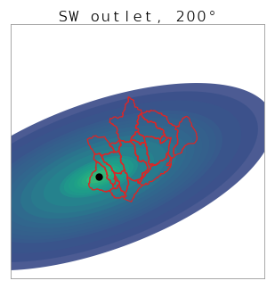
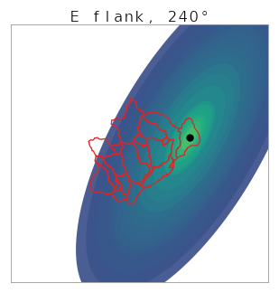
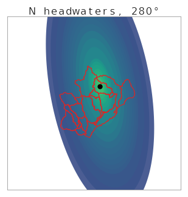
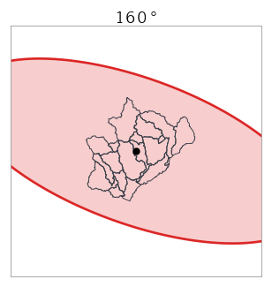
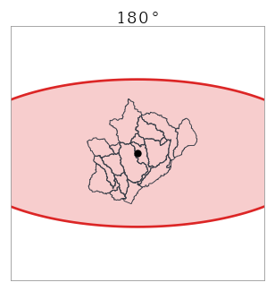
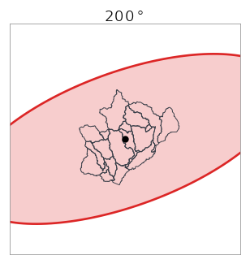
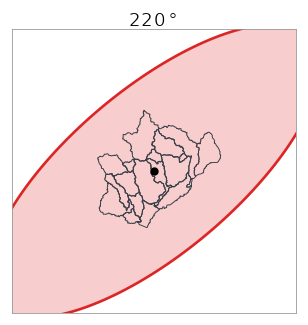
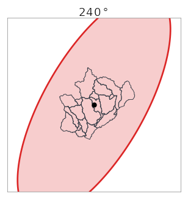
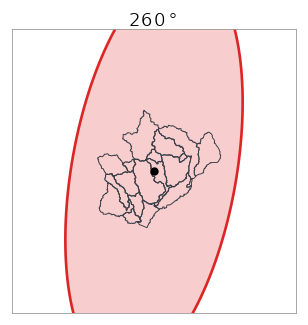
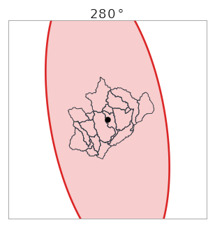

Frequency-Flow Isohyet Optimizer
1. Problem Statement
FHWA HEC-19 (Hydrology for Highway Engineers) calls for an areal reduction of frequency precipitation depths for watersheds large enough to be impacted by spatial variability. The Depth Area Reduction Factor curves recommended in HEC-19 are only for watersheds up to 400 mi², but the target basin for this project is about 2,839 mi² — NOAA Atlas 14 grids supply point/grid-cell precipitation frequency estimates — if a uniform Atlas 14 depth is applied across an 800–3000 mi² basin, every point is implicitly experiencing its full point-frequency depth simultaneously, which is physically unrealistic and inflates simulated flows.
For a joint-probability design where source flows entering an HEC-HMS model are paired across upstream gages, a frequency-consistent local rainfall input is needed to drive the routing through the basin. To stay frequency-consistent without overstating the storm, this project combines two well-established sources:
- Atlas 14 supplies the magnitude: the precipitation depth at the storm centroid is sampled directly from the gridded Atlas 14 raster for the desired frequency (50, 100, or 500-yr) and 24-hr duration.
- HMR 52 supplies the spatial decay: the depth at every other point in the storm is set by a 2.5:1 elliptical pattern with a depth-area- duration (DAD) curve derived from HMR 52, sourced from HEC-MetVue.
Because peak flow at the watershed outfall depends on where the storm is centered and how the elliptical major axis is oriented relative to the basin's hydrologic geometry, a single placement is insufficient. We iterate over candidate storm centroids and orientations at each frequency, run the HEC-HMS model for each combination, and report the scenario that produces the highest peak flow at the target junction.
2. Basin and Atlas 14 Coverage
The basin (delineated as 19 HEC-HMS subbasins) sits near the Tennessee–Missouri–Arkansas tri-state border, totaling about 2,839 mi². The map below shows the subbasin layer over the gridded Atlas 14, 100-yr, 24-hr raster, with an OSM basemap for context. Atlas 14 is supplied as ESRI ASCII grids in NAD83 geographic coordinates, with depth encoded as integer thousandths of an inch.
The raster's spatial variation across this basin is small but real ([range loading]) — the centroid magnitude depends on where in the basin the storm is placed, which is one of the dimensions our iteration will sweep.
3. The HMR 52 Depth-Area-Duration Curve
The DAD curve sets the shape of the storm: a single anchor point near the storm centroid (1.0) decays with enclosed area outward. This particular curve was extracted from HEC-MetVue's built-in HMR 52 dataset for 24-hr durations, then extended out to 20,000 mi² so storm sizes that envelop the full basin at any orientation can be modeled without clamping.
The depth at any cell inside the elliptical storm is then:
depth(cell) = centroid_depth × dad_interp(enclosed_area_through_cell)
where centroid_depth is the Atlas 14 grid value at the storm centroid
and enclosed_area_through_cell is the area of the similar (concentric)
ellipse passing through that cell (which depends only on the cell's position relative
to the centroid, not on the storm's outer size).
4. Storm Ellipse Spatial Pattern
Applying the DAD curve to a 20,000 mi² storm centered on the basin centroid produces the nested isohyetal pattern below. Both maps use viridis, but with different stretches tuned to their data ranges — Atlas 14 on a tight 6.5–9.5 in window (its values cluster in a narrow band), the storm on 0–10 in (its rings span a much wider range). The black dot marks the storm centroid; depth at that point equals the Atlas 14 sample (8.40 in for the 100-yr 24-hr at this centroid).
5. Subbasin-Average Hyetographs
The storm-total depth raster gives one scalar per subbasin (the area-weighted mean of depth-field cells inside that subbasin polygon). Multiplying these per-subbasin totals by an SCS Type II 24-hr cumulative temporal distribution (taken from the HydroCAD distribution table) and differencing yields per-timestep incremental precipitation for each subbasin:
Each line above is one subbasin's hyetograph at 15-minute resolution. The Type II profile peaks sharply around hour 12; vertical separation between subbasins reflects their position relative to the storm centroid (subbasins near the center receive more total depth, so their entire profiles ride higher).
This DataFrame becomes a multi-record DSS file (one time-series record per subbasin) that overwrites the precipitation references in an existing HEC-HMS Met Model of type Specified Hyetograph. HMS is then invoked via subprocess; the resulting flows DSS is read back to extract the target junction's hydrograph, which is exported as CSV for downstream comparison across all scenarios.
Why this matters: location & orientation drive peak flow
Three illustrative scenarios — same 100-yr 24-hr Atlas 14 magnitude, same 20,000 mi² storm size, same Type II temporal distribution — but with the storm centered on three different subbasins and rotated to three different orientations. The result at the watershed outfall changes substantially.



6. Iteration Plan
For each of the 19 subbasins, the elliptical storm will be placed at the subbasin's centroid to perform an HEC-HMS run. For each centroid, we will also perform 7 orientations of the storm.
Storm orientations
At each subbasin centroid, the storm is rotated through the 7 orientations below (20° steps spanning the HMR 52 Table 9 Central Plains range of 160–285°). The storm extent and basin context are shown for the basin-centroid case; the same orientations are applied at every subbasin centroid in the iteration.







Full sweep
| Dimension | Values | Count |
|---|---|---|
| Storm area | 20,000 mi² (Ensure full basin coverage at any orientation) | 1 |
| Storm centroid | One per subbasin (representative point inside the polygon) | 19 |
| Orientation | 160°, 180°, 200°, 220°, 240°, 260°, 280° (20° steps over HMR 52 Table 9 Central Plains range 160–285°) | 7 |
| Frequency | 50, 100, 500-yr | 3 |
| Total scenarios | 399 | |
At an estimated 60 s per HEC-HMS simulation, the full 399-scenario sweep runs in roughly 7 hours on a single machine. Once the peak-producing scenario is identified, a gridded DSS file will be created for that frequency event to use as the precipitation data in the production HEC-HMS model.